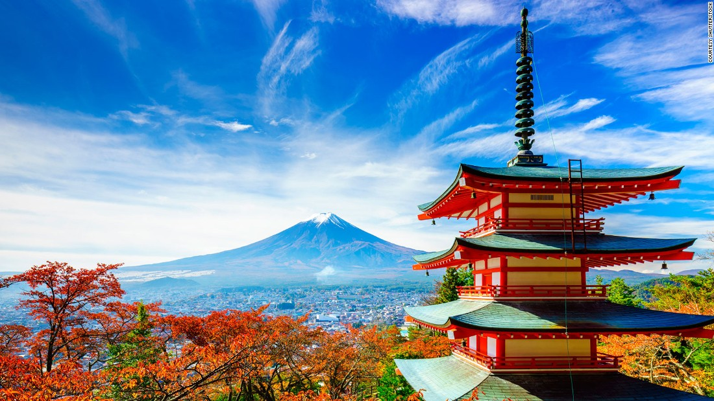

Areas to go! |
Why should you go? |
How will you get there? |
Images of the place! |
| Peterborough |
Peterborough is a cathedral city and unitary authority area in Cambridgeshire, England, with a population of 202,110 in 2017. Originally part of Northamptonshire, it became part of Cambridgeshire from 1974. The city is 76 miles (122 km) north of London, on the River Nene which flows into the North Sea 30 miles (48 km) to the north-east. The railway station is an important stop on the East Coast Main Line between London and Edinburgh. |
You can get there by car or train. |
|
| Edinburgh |
Edinburgh, Gaelic Dun Eideann, capital city of Scotland, located in southeastern Scotland with its centre near the southern shore of the Firth of Forth, an arm of the North Sea that thrusts westward into the Scottish Lowlands. The city and its immediate surroundings constitute an independent council area. The city and most of the council area, including the busy port of Leith on the Firth of Forth, lie within the historic county of Midlothian, but the council area also includes an area in the northwest, around South Queensferry, in the historic county of West Lothian. |
You can get there by car or train. |
|
| Washington D.C |
The District of Columbia, on the Potomac River between Maryland and Virginia, was set aside as the nation's capital so that the federal government would not be located in any single state. Pierre-Charles L'Enfant was commissioned by George Washington to plan the city, and you can clearly see L'Enfant's layout of a street grid intersected by broad avenues. The most important of these is Pennsylvania Avenue, connecting two iconic buildings: the White House and the impressive domed Capitol Building. Alongside and maintaining L'Enfant's vision of an open and spacious city stretches the wide National Mall with its museums and monuments. National symbols such as the Capitol and the White House are accessible to visitors, along with dozens of other tourist attractions, which include world-class museums and important monuments. |
You can get there by car or train. |
|
Hawaii |
Hawaii's tropical climate and laid-back Pacific Island atmosphere are just part of what makes the state so special. Occupying the tops of massive volcanic mountaintops jutting from the sea, these islands have a diverse and beautiful landscape that varies from the stark lunar surface of the Kilauea volcano to lush green forests filled with exotic flowers. Waterfalls stream down the mountain sides like tears on the dramatic Na Pali coast, while ancient rivers have carved deep into the rock of Kauai to create the Waimea Canyon. The Big Island is home to an active volcano, and Oahu is home to Pearl Harbor and its rich history. Surrounding them all, the mighty Pacific is home to a plethora of ocean life, providing endless opportunities to snorkel, scuba dive, surf, or simply go for a swim after sunbathing. Perhaps the most special part of the islands, however, are its people, whose welcoming attitude make you truly feel like you are in paradise. |
You can get there by an Airplane or a Cruise ship. |
|
India |
India is a vibrant land of startling contrasts where both the traditional and modern worlds meet. The world's seventh largest nation by area and the second largest in terms of population, India boasts a rich heritage that's the result of centuries of different cultures and religions leaving their mark. Things to do for travelers include the opportunity to experience an array of sacred sites and spiritual encounters, while nature lovers will enjoy its sun-washed beaches, lush national parks, and exciting wildlife sanctuaries. From the magnificent Taj Mahal in Agra to the holy sites of Harmandir Sahib (formerly the Golden Temple) in Amritsar and the Mecca Masjid mosque in Hyderabad, visitors to this exotic country will discover a trove of spiritual, cultural, and historical treasures. To help you make the most of your time in this amazing country, refer often to our list of the top things to do in India. |
You can get there by an Airplane or a Cruise ship. |
|
Japan |
Many first-time visitors to Japan are often surprised to learn that, as one of the world's most advanced industrialized nations, this relatively small Asian country also boasts a rich and fascinating history that dates back thousands of years. Indeed, long before many of Europe's most spectacular cathedrals were built, Japan's Shinto and Buddhist temples were already well-established and drawing pilgrims and patrons for their often elaborate designs and décor. At the same time, the country was already perfecting the skills and trades that would set it on the path to riches, from fine porcelains and ceramics to textiles such as silk. Much of this rich tradition has, despite wars and natural devastation, been preserved (or rebuilt), and a visit to Japan is a memorable adventure. Boasting an endless list of top attractions, fun things to do, and points of interest to explore, a vacation in Japan is certainly a great investment of time and money. Discover the best places to visit in the country with our list of the top tourist attractions in Japan. |
You can get there by an Airplane or a Cruise ship. |
 |
China |
Ever since the world first discovered China through the writings of adventurer Marco Polo more than 700 years ago, this large Asian country has come to be regarded as the embodiment of all that is mysterious and exotic. Even now, after decades of economic growth, this vast country has lost none of its fascination. Indeed, the contrast between China's ancient customs and the new ultra-modern state that is developing has only increased the fascination with a culture that dates back many millennia. It's a culture that is much celebrated by the Chinese themselves, as evidenced by the preservation of such important historic sites as the Forbidden City and the Summer Palace in Beijing, each recalling the days of China's emperors. And then, of course, there's the famous Great Wall, winding for 6,700 kilometers all the way from the Yellow Sea to Central Asia, while its countless shrines exude the spirit of age-old Eastern religions. |
You can get there by an Airplane or a Cruise ship. |
|
France |
From the boulevards of Paris to the fashionable seaside resorts of the Côte d'Azur, France offers some of the most beautiful scenery in the world. Fairy-tale castles, glorious cathedrals, and picture-perfect villages delight romantics. At the same time, the country's contemporary monuments and rapid train transit jolt visitors from the storybook surroundings into the ambience of the 21st century. Begin with the Eiffel Tower, the modern emblem of France. Then discover famous masterpieces of art at the Louvre Museum. Spend a day pretending to be royalty at the elegant Palace of Versailles. Save time for leisurely gourmet meals - traditional French gastronomy has been inscribed on the UNESCO list of Intangible Cultural Heritage. Each region has its own distinctive cuisine and culture. The coastal region of Brittany offers the old-world charm of quaint fishing villages and ancient seaports, while the French Alps reveals the region's hearty cuisine of cheese fondue and charcuterie served in cozy chalets near ski slopes. Indulge in it all and savor the country's irresistible charm with our list of the top attractions in France. |
You can get there by an Airplane. |
|
Spain |
The grandeur of a caliph's palace, sybaritic sun-drenched Mediterranean beaches, the staccato stamp of a flamenco dancer's heels, the awed hush of pilgrims entering the cathedral at Santiago de Compostela after weeks of walking El Camino. You can find the soul of Spain in tourist attractions such as these, which represent the country's tumultuous history, rich culture, and enchanting natural beauty. From the sunlight playing endlessly off the "scales" of Gehry's Guggenheim Museum and the throbbing street life of La Rambla and Plaza Mayor to the forest of columns and Moorish arches disappearing into the silent expanse of Cordoba's Great Mosque, Spain exudes a vibrant energy and a captivating blend of past and present. Plan your sightseeing and find interesting things to do with our list of the top attractions in Spain. |
You can get there by an Airplane. |
|
Canada |
The second largest country in the world, Canada has no shortage of beautiful landscapes and interesting sights for travelers to explore. From coast to coast to coast, the country is home to vibrant and culturally rich cities, along with incredible natural wonders. In Western Canada, the Rocky Mountains; the Okanagan Valley; and the cities of Vancouver, Victoria, and Calgary are some of the best places to visit and frequently dominate itineraries. In Central Canada, Niagara Falls, Toronto, Ottawa, Montreal, and Quebec City are some of the most popular tourist destinations. |
You can get there by an Airplane. |
 |